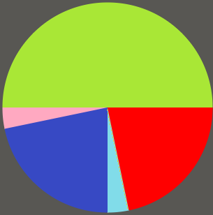
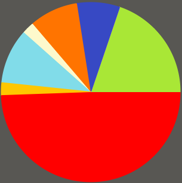
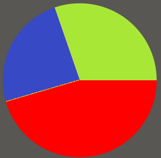
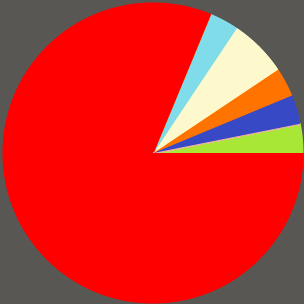
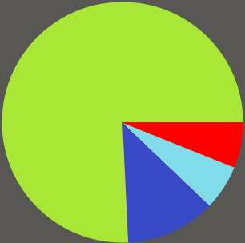
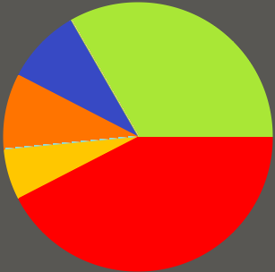
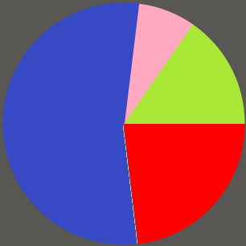
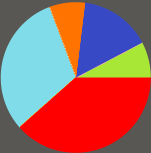
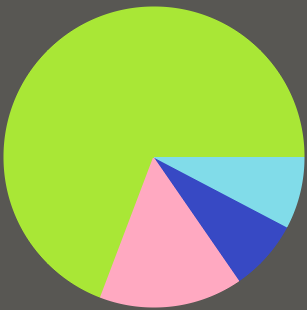
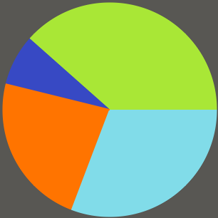

Introduction
All our lives have changed in 2020 due to the COVID-19 pandemic. We are all experiencing its effects, especially regarding ways of communication. Nowadays, communication is all about safety measures and social-distancing. Nonetheless, we were interested in investigating non-verbal behaviours and how they have changed in comparison to pre-Corona times in different cultures. Our group is culturally diverse, and as we discussed how we greet different people, acquaintances and close friends, throughout these times, we found differences and not much common ground, specifically in regards to proxemics and haptics. Clarke defines common ground as the mutual, common and joint knowledge, beliefs and suppositions between two people. Furthermore, Germans, according to Hall, are considered to be part of the low context cultures. Egyptians are, however, considered to be a high-context culture.
Thus, we wanted to apply an investigation on a larger scale regarding common ground during greetings focusing on proxemics and haptics between Egyptian and German university students.
We came up with the following research question: How did greeting behaviours, with a focus on proxemics and haptics, change due to the Covid-19 pandemic when comparing German and Egyptian university students?
Method
We created a survey for university students in Egypt and Germany to examine their greeting behaviours in regards to proxemics and haptics, how it changed in comparison to before and during the COVID-19 pandemic.
We chose to present German and Egyptian students with a hypothetical setting and situation, meeting an acquaintance and a close friend in a university context, for which several questions had to be answered.
Firstly, participants had to state their nationality and define which culture had shaped their identity the most. We decided to choose the culture that has shaped participants’ identity as a starting point. Secondly, we wanted to know if they were indeed university students, and if the answer was no they were automatically taken out of our date poll. Thirdly, we asked questions about participants greeting behaviour in the hypothetical context we had created. The participants had to answer how they would greet an acquaintance, a person whom they know but do not know well and who is therefore not exactly a friend, pre and during corona times. Then, the participants had to answer how they would greet a close friend, being someone they know well and with whom they are likely to communicate with also outside of the university, also before and throughout the COVID-19 pandemic.
Participants could choose between the following options to greet an acquaintance and close friend:
hug
kisses
handshake

high five
fist bump
elbow greeting
foot greeting
non-contact greeting
Regarding our exceptional circumstances, various governments have given examples of the elbow or foot greeting to greet someone throughout the pandemic. For reference we have included images in the survey of what we mean with these two types of greeting behaviours.
For non-contact greetings, we have included that they are at least 1.5 meters away, as governments in contemporary times have advised keeping at least this distance from others. We decided on the 1.5-meter distance so that participants would feel ‘safe’ at least according to government suggestions.
Data & Analysis
Proxemics concerns spaces and distances between participants of non-verbal communication. Within proxemics, there are four distinguished spaces. The closest distance to an individual is the intimate space which includes anything up until 0.45 meters away. The second space is called personal space, which is between 0.45 meters and 1.2 meters. The third space, social space, is from 1.2 meters to 3.6 meters. The public space is considered to be from 3.6 meters to 7.6 meters. Haptics is a type of non-verbal communication that is about how people touch, are touched, and what kind of touch is appropriate and which is not.
In our analysis, we have grouped the following greeting behaviours into the following proxemic spaces along with haptics:
Intimate space:
- a hug
- kisses on the cheek (any amount)
People will enter each other’s intimate space when a hug or kisses on the cheek (any amount) are done as a way of greeting. In regards to haptics, participants would touch each other very closely in the head and cheek area or would embrace each other.
Personal space:
- a handshake
- a fist bump
- a high five
We considered a handshake, a fist bump and a high five to be within the personal space. In regards to haptics, the hands of the participants would touch.
Social space:
- an elbow greeting
- a foot greeting
The elbow and foot greeting were grouped into the social space by us. Even though both greetings might also occur in the personal space, depending on the height or closeness of participants, there is another crucial factor there. These greetings were suggested as safe and were taken as examples by many governments. The reasoning why we grouped these greeting into the social space, as it can be seen as ‘appropriate’ and safe throughout the COVID-19 pandemic. In regards to haptics, the elbows or feet of participants would touch.
Social space and public space:
- a non-contact greeting (1.5 meters away at least): wave, smile, nod, or a verbal utterance for example: hello or hey
The non-contact greetings placed at least 1.5-meters away but can also be done further away, thus, can expand into the public space. We decided to label these non-contact greetings as both, as we wanted to make sure that participants knew this greeting choice was adhering to the suggestions of governments regarding safety distances. In this category, there is no physical contact and no haptics.
The Covid-19 pandemic has changed our greeting behaviours, which is also reflected in the data, we collected. Greeting behaviours that enter into each others intimate space have declined from over 35% to less then 20%, while greetings that stay in the social and public space have nearly tripled. Greetings that enter into the personal space have declined too. We can also see that three greeting behaviours, that were not used at all before the pandemic, were newly added: the high five, the elbow greeting and the foot greeting.
All Participants
pre-Covid
50.00%
21.74%
21.74%
3.26%
3.26%
during Covid
49.45%
19.78%
9.89%
8.79%
7.67%
2.20%
2.20%
Egyptian Students
pre-Covid
pre-covid_zugeschnitten.png)
42.31%
30.77%
11.54%
11.54
3.84%
during Covid
duringCovid_zugeschnitten.png)
30.77%
23.08%
19.23%
15.38%
11.54%
According to Hall, high context actions are “rooted in the past, slow to change, and highly stable.” (Hall 1976, 93) This suggests that in Egypt, a high context culture, greetings are less likely to change during the Coronavirus pandemic because the greeting is a routine that is set in stone and is ingrained within the country. The greeting is a ritual that is unlikely to be affected by different contexts. However, the greetings of Egyptian participants did shift and change before and after the Coronavirus pandemic. Our research has shown that 30.77% of Egyptians have shifted their greeting behaviour from a hug or kisses towards the personal or social space. The fist bump and elbow greeting have shown to be the most popular greetings Egyptian students have turned to.
German Students
pre-Covid
pre-covid_zugeschnitten.png)
53.85%
26.15%
16.92%
3.08%
during Covid
duringCovid_zugeschnitten.png)
61.54%
18.46%
6.15%
6.15%
3.08%
3.08%
1.51%
There is an evident response to the different context that has ensued as people have changed their greeting routines and increased the proximity between each other during this exchange. This is reinforced by Ide, who suggests that it is compulsory for speakers in high context cultures to consider the contextual factors they find themselves in during their communicative performance in order to ensure their verbal and non-verbal decisions are in line with the relevant context.” (Ide 2005, 62) This change in greeting due to context is also evident in Germany, however, which remains in line with Ide’s belief that linguistic decisions are always made with the contextual features in mind and that situational context is vital in formulating appropriate linguistic choices within low context actions. (Ide 2005, 62)
When comparing Egyptian and German Students our data shows that, German students have increased their proximity to a larger extent than Egyptian students. While fist bump and the elbow greeting have shown to be the most popular greetings Egyptian students have turned to, German students mainly turned to a non-contact greeting. 61.54% of German students chose a non-contact greeting as being appropriate during the pandemic, compared to 19.23% of the Egyptians.
Culture is “learned knowledge, used to interpret experience and to generate behavior” according to Moran. (Moran 2000, 342) In Germany, politicians and the news have been used to inform the population of the threat of coronavirus and the dangers associated with contracting the disease. Furthermore, the German population has been well informed into how to avoid contraction of the virus and to stay safe. Therefore, the German culture uses this knowledge and experience to decide the appropriate way to greet an individual. Conversely, in Egypt the population has been lied to and misinformed about the dangers of the pandemic and not been given proper instruction on how to avoid contracting the virus. Therefore, Egyptians cannot utilise learned knowledge to effect their behaviour in this new context and therefore, their behaviour changes by a smaller degree: greetings remain in the personal and social space, while in Germany the shift is greater, moving predominantly into the public space.
Hall suggests that "physical contact between two people […] can be perfectly correct in one culture, and absolutely taboo in another." (Hall 1968, 88) This insinuates that physical contact has different connotations between cultures, thus possibly indicating that Egyptians are less likely to relinquish physical contact during greetings as it has added meaning and removal of it may cause offence.
Our data on Egypt exhibits that the majority of greetings prior to the Coronavirus pandemic fall under the personal space,which strongly suggests that Egyptians are more comfortable in close proximity than Germany. We can reach this conclusions by analysing our data from German participants. In Germany, greetings prior to the Coronavirus pandemic already start with a further distance between participants, highlighting that proximity between individuals is not key in German culture and therefore much easier to forgo in a greeting. Hall’s research reinforces this idea by suggesting that individuals from distinct cultures occupy contrasting sensory worlds which allows them to structure spaces differently as well as experience space in a different way due to the sensorium being ‘programmed’ differently (Edward Hall 1968, 87). Proxemics are experienced differently between cultures.
As we examine haptics, we can see that in Egyptian culture, touching and physical contact is incorporated within their greeting routines. This is culturally normalised and seen as an expression of closeness and friendliness. In other cultures, this high degree of physical contact can be viewed as aggressive or threatening. (Ting-Toomy 1999) This suggests that physical contact and haptics is viewed differently across cultures, similarly to proxemics. This allows some cultures to discard physical contact from their communicative exchanges, while some cultures, such as the Egyptian culture, this is much more difficult to do so.
German Acquaintances
pre-Covid
45.46%
30.30%
24.24%
during Covid
81.25%
3.13%
3.13%
3.12%
3.12%
6.25%
German Friends
pre-Covid
6.06%
75.75%
12.13%
6.06%
during Covid
42.43%
33.33%
9.09%
6.06%
9.09%
In our research, we focused on acquaintances which we defined as a person whom participants know but do not know well and who is therefore not exactly a friend. We also chose close friends which we deemed as someone they know well and with whom participants are likely to communicate with also outside of the university. We included both acquaintances and close friends to make sure that we would receive reliable data. Participants might be less or more likely to change their greeting behaviours in regards to proxemics and haptics also based on the principle of keeping a positive face and the relationship, or personal common ground, they have established with the person they are greeting.
Our collected data actually shows a big difference between the increased distance that friends choose to greet each other during the pandemic in comparison to acquaintances. If we look at German students, we can see that the number of hugs among friends has decreased by 44% while the number of hugs among acquaintances has decreased by almost 90%. 81.25% of the German students chose a non-contact greeting to be appropriate for greeting an acquaintance in university, but only half of them (42.43%) would choose the same greeting when greeting a friend.
Egyptian Acquaintances
pre-Covid
23.08%
15.38%
53.85%
7.69%
during Covid
38.47%
7.69%
15.38%
30.77%
7.69%
Egyptian Friends
pre-Covid
7.96%
69.23%
15.39%
7.96%
during Covid
7.69%
38.46%
23.07%
30.78%
In Egypt, greetings between close friends differed very slightly before and after the Coronavirus pandemic. 38.46% of Egyptian friends stayed within the intimate space when greeting a friend during the pandemic, while 46.16% shifted from the intimate space to the personal and social space, but none of the Egyptian friends turned to a non-contact greeting. This can be explained by the fact that during high-context modes of communication the majority of information is either found in the physical context or internalized within the person; a minimal amount of information is coded or explicit. (Hall 1976, 91). This suggests that the method Egyptians utilise to greet eachother is indicative of the relationship between the two parties; the greetings exhibit the connection between individuals. The greeting is an expression of the closeness between the participants and therefore remains constant, regardless of the context they are in. In Germany, a low context culture, the relationship between individuals is not concealed within the non-verbal actions of individuals during the greeting process. Therefore the greeting is more likely to be altered by participants in different contexts as the non-verbal actions hold much less meaning than in a high context culture: the majority of information [in low context communication] is lodged in the explicit code. (Hall 1976, 91)
Conclusion
Our investigations of greeting behaviours of Egyptian and German university students in regards to acquaintances and friends during and before the Covid 19 pandemic have lead us to the conclusion that there are several differences between German and Egyptian students in how they adjust their greeting behaviour as well as between acquaintances and friends. Greeting behaviours have changed before and after the Covid 19 pandemic, but they have changed to a different extend. While most German university students changed their greeting into a non-contact greeting, most Egyptian students stayed within their personal space when greeting a fellow student. This might be explained by grouping Egyptians into a high context culture, which makes their greeting behaviour less likely to change since it is a routine that has added meaning and is ingrained within the country. Especially among Egyptian friends the greeting behaviour has changed only slightly since it expresses the connection and closeness between individuals. A further explanation is that in Germany the message to keep their distance has been spread by politicians and news and clearer instructions were given than in Egypt. When comparing acquaintances and friends during and before the pandemic, we could see that the greeting behaviour between acquaintances has changed to a larger extent than between friends. 90.62% of German acquaintances choose to shift into or stay in social space when greeting an acquaintance, while 51.53% of friends decided to shift to the social space and the rest stayed in the private or intimate space.
Bibliography
Hall, Edward. 1976. Beyond Culture. New York: Anchor Press.
Hall, Edward. 1968. “Proxemics.” Current Anthropology 9, no.2 (June): 83-108.
Lakoff, Robin, and Sachiko Ide. 2005. Broadening the Horizon of Linguistic Politeness. Philadelphia: John Benjamins Publishing
Company.
Moran, Emilio. 2018. Human Adaptability: An Introduction to Ecological Anthropology. Colorado: Taylor and Francis Group.
Ting-Toomey, Stella. 1999. Communicating Across Cultures. New York: Guilford Press.